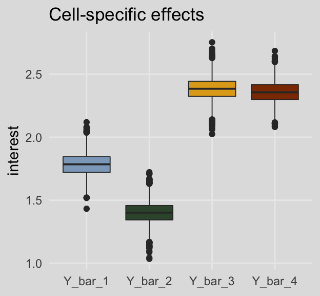
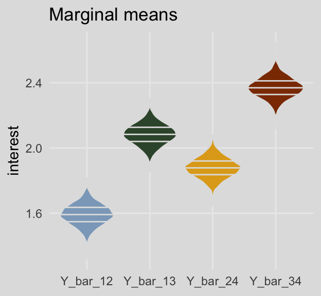
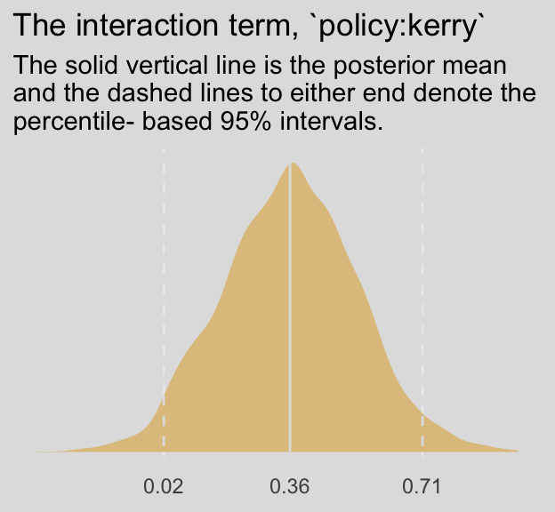
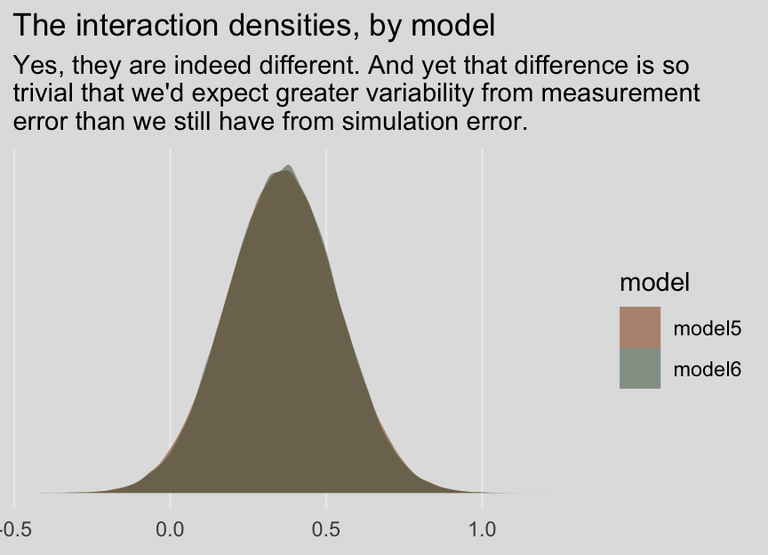
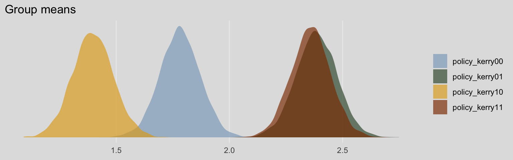

8.4 The equivalence between moderated regression analysis and a 2 X 2 factorial analysis of variance
I’m just not going to encourage ANOVA \(F\)-testing methodology. However, I will show the Bayesian regression model. First, here are the data.
caskets <- read_csv("data/caskets/caskets.csv")
glimpse(caskets)## Observations: 541
## Variables: 7
## $ policy <int> 1, 0, 1, 1, 1, 0, 1, 1, 0, 1, 1, 1, 0, 1, 0, 1, 0, 0, 1, 1, 0, 1, 0, 1, 0, 1, ...
## $ interest <dbl> 4.0, 2.0, 3.0, 1.0, 1.0, 2.0, 1.0, 2.5, 3.0, 1.0, 2.0, 3.5, 1.0, 1.0, 1.5, 3.0...
## $ age <int> 39, 57, 63, 56, 50, 87, 33, 64, 82, 28, 18, 52, 42, 39, 64, 72, 54, 84, 55, 27...
## $ educ <int> 3, 3, 2, 5, 3, 2, 7, 2, 3, 3, 1, 1, 5, 4, 3, 2, 3, 4, 7, 2, 3, 5, 4, 5, 5, 3, ...
## $ male <int> 1, 1, 0, 1, 0, 1, 0, 1, 0, 0, 1, 0, 0, 1, 0, 0, 0, 0, 1, 1, 1, 0, 1, 1, 1, 1, ...
## $ conserv <int> 4, 3, 6, 3, 3, 5, 6, 3, 6, 7, 4, 2, 7, 6, 5, 6, 6, 3, 7, 6, 5, 5, 3, 4, 6, 2, ...
## $ kerry <int> 1, 1, 1, 1, 1, 0, 0, 1, 0, 0, 0, 1, 1, 0, 1, 1, 1, 1, 0, 0, 0, 0, 1, 0, 0, 0, ...The model:
model5 <-
brm(data = caskets, family = gaussian,
interest ~ 1 + policy + kerry + policy:kerry,
chains = 4, cores = 4)print(model5)## Family: gaussian
## Links: mu = identity; sigma = identity
## Formula: interest ~ 1 + policy + kerry + policy:kerry
## Data: caskets (Number of observations: 541)
## Samples: 4 chains, each with iter = 2000; warmup = 1000; thin = 1;
## total post-warmup samples = 4000
##
## Population-Level Effects:
## Estimate Est.Error l-95% CI u-95% CI Eff.Sample Rhat
## Intercept 1.78 0.09 1.61 1.96 2823 1.00
## policy -0.38 0.13 -0.64 -0.13 2520 1.00
## kerry 0.60 0.13 0.35 0.86 2626 1.00
## policy:kerry 0.36 0.18 0.02 0.71 2264 1.00
##
## Family Specific Parameters:
## Estimate Est.Error l-95% CI u-95% CI Eff.Sample Rhat
## sigma 1.04 0.03 0.98 1.10 4000 1.00
##
## Samples were drawn using sampling(NUTS). For each parameter, Eff.Sample
## is a crude measure of effective sample size, and Rhat is the potential
## scale reduction factor on split chains (at convergence, Rhat = 1).Those results don’t look anything like what Hayes reported in Tables 8.3 or 8.4. However, a little deft manipulation of the posterior samples can yield equivalent results to Hayes’s Table 8.3.
post <-
posterior_samples(model5) %>%
mutate(Y_bar_1 = b_Intercept + b_policy*0 + b_kerry*0 + `b_policy:kerry`*0*0,
Y_bar_3 = b_Intercept + b_policy*0 + b_kerry*1 + `b_policy:kerry`*0*1,
Y_bar_2 = b_Intercept + b_policy*1 + b_kerry*0 + `b_policy:kerry`*1*0,
Y_bar_4 = b_Intercept + b_policy*1 + b_kerry*1 + `b_policy:kerry`*1*1,
Y_bar_12 = b_Intercept + b_policy*.5 + b_kerry*0 + `b_policy:kerry`*.5*0,
Y_bar_34 = b_Intercept + b_policy*.5 + b_kerry*1 + `b_policy:kerry`*.5*1,
Y_bar_13 = b_Intercept + b_policy*0 + b_kerry*.5 + `b_policy:kerry`*0*.5,
Y_bar_24 = b_Intercept + b_policy*1 + b_kerry*.5 + `b_policy:kerry`*1*.5)Here are the cell-specific means in Table 8.3.
post %>%
select(Y_bar_1:Y_bar_4) %>%
gather() %>%
group_by(key) %>%
summarize(median = median(value),
ll = quantile(value, probs = .025),
ul = quantile(value, probs = .975)) %>%
mutate_if(is.double, round, digits = 3)## # A tibble: 4 x 4
## key median ll ul
## <chr> <dbl> <dbl> <dbl>
## 1 Y_bar_1 1.78 1.61 1.96
## 2 Y_bar_2 1.40 1.22 1.58
## 3 Y_bar_3 2.38 2.20 2.56
## 4 Y_bar_4 2.36 2.19 2.53And here are the marginal means from Table 8.3.
post %>%
select(Y_bar_12:Y_bar_24) %>%
gather() %>%
group_by(key) %>%
summarize(median = median(value),
ll = quantile(value, probs = .025),
ul = quantile(value, probs = .975)) %>%
mutate_if(is.double, round, digits = 3)## # A tibble: 4 x 4
## key median ll ul
## <chr> <dbl> <dbl> <dbl>
## 1 Y_bar_12 1.59 1.47 1.72
## 2 Y_bar_13 2.08 1.96 2.21
## 3 Y_bar_24 1.88 1.76 2.00
## 4 Y_bar_34 2.37 2.25 2.49For kicks and giggles, here are what the cell-specific means look like in box plots.
post %>%
select(Y_bar_1:Y_bar_4) %>%
gather() %>%
ggplot(aes(x = key, y = value, fill = key)) +
geom_boxplot(size = 1/3) +
scale_fill_manual(values = ochre_palettes[["olsen_qual"]][c(5, 6, 4, 3)]) +
labs(title = "Cell-specific effects",
x = NULL,
y = "interest") +
theme_08 +
theme(legend.position = "none")
And here are the same for the marginal means. This time we’ll show the shapes of the posteriors with violin plots with horizontal lines depicting the median and interquartile ranges.
post %>%
select(Y_bar_12:Y_bar_24) %>%
gather() %>%
ggplot(aes(x = key, y = value, fill = key)) +
geom_violin(draw_quantiles = c(.25, .5, .75),
color = ochre_palettes[["olsen_seq"]][8]) +
scale_fill_manual(values = ochre_palettes[["olsen_qual"]][c(5, 6, 4, 3)]) +
labs(title = "Marginal means",
x = NULL,
y = "interest") +
theme_08 +
theme(legend.position = "none")
On page 294, Hayes used point estimates to compute the simple effect of policy information among Kerry supporters and then the same thing among Bush supporters. Here’s how we’d do that when working with the full vector of posterior iterations:
post %>%
transmute(simple_effect_Kerry = Y_bar_4 - Y_bar_3,
simple_effect_Bush = Y_bar_2 - Y_bar_1) %>%
gather() %>%
group_by(key) %>%
summarize(median = median(value),
ll = quantile(value, probs = .025),
ul = quantile(value, probs = .975)) %>%
mutate_if(is.double, round, digits = 3)## # A tibble: 2 x 4
## key median ll ul
## <chr> <dbl> <dbl> <dbl>
## 1 simple_effect_Bush -0.385 -0.642 -0.134
## 2 simple_effect_Kerry -0.028 -0.271 0.229So then computing the main effect for policy information using the simple effects is little more than an extension of those steps.
post %>%
transmute(main_effect = ((Y_bar_4 - Y_bar_3) + (Y_bar_2 - Y_bar_1))/2) %>%
summarize(median = median(main_effect),
ll = quantile(main_effect, probs = .025),
ul = quantile(main_effect, probs = .975)) %>%
mutate_if(is.double, round, digits = 3)## median ll ul
## 1 -0.206 -0.379 -0.026And we get the same results by strategically subtracting the marginal means.
post %>%
transmute(main_effect = Y_bar_24 - Y_bar_13) %>%
summarize(median = median(main_effect),
ll = quantile(main_effect, probs = .025),
ul = quantile(main_effect, probs = .975)) %>%
mutate_if(is.double, round, digits = 3)## median ll ul
## 1 -0.206 -0.379 -0.026So then the main effect of for candidate is similarly computed using either approach:
post %>%
transmute(main_effect = ((Y_bar_4 - Y_bar_2) + (Y_bar_3 - Y_bar_1))/2) %>%
summarize(median = median(main_effect),
ll = quantile(main_effect, probs = .025),
ul = quantile(main_effect, probs = .975)) %>%
mutate_if(is.double, round, digits = 3)## median ll ul
## 1 0.777 0.601 0.953post %>%
transmute(main_effect = Y_bar_34 - Y_bar_12) %>%
summarize(median = median(main_effect),
ll = quantile(main_effect, probs = .025),
ul = quantile(main_effect, probs = .975)) %>%
mutate_if(is.double, round, digits = 3)## median ll ul
## 1 0.777 0.601 0.953We don’t have an \(F\)-test for our Bayesian moderation model. But we do have an interaction term. Here’s its distribution:
post %>%
ggplot(aes(x = `b_policy:kerry`)) +
geom_density(size = 0,
fill = ochre_palettes[["olsen_qual"]][2]) +
geom_vline(xintercept = fixef(model5)["policy:kerry", c(1, 3, 4)],
color = ochre_palettes[["olsen_seq"]][8], linetype = c(1, 2, 2)) +
scale_x_continuous(breaks = fixef(model5)["policy:kerry", c(1, 3, 4)],
labels = fixef(model5)["policy:kerry", c(1, 3, 4)] %>% round(digits = 2)) +
scale_y_continuous(NULL, breaks = NULL) +
labs(title = "The interaction term, `policy:kerry`",
subtitle = "The solid vertical line is the posterior mean\nand the dashed lines to either end denote the\npercentile- based 95% intervals.",
x = NULL) +
theme_08 +
theme(legend.position = "none")
Following Hayes’s work on the bottom of page 295, here’s how you’d reproduce that by manipulating our \(\overline{Y}\) vectors.
post %>%
transmute(reproduced_interaction_term = (Y_bar_4 - Y_bar_3) - (Y_bar_2 - Y_bar_1)) %>%
summarize(median = median(reproduced_interaction_term),
ll = quantile(reproduced_interaction_term, probs = .025),
ul = quantile(reproduced_interaction_term, probs = .975)) %>%
mutate_if(is.double, round, digits = 2)## median ll ul
## 1 0.36 0.02 0.71Extending that logic, we also get:
post %>%
transmute(reproduced_interaction_term = (Y_bar_4 - Y_bar_2) - (Y_bar_3 - Y_bar_1)) %>%
summarize(median = median(reproduced_interaction_term),
ll = quantile(reproduced_interaction_term, probs = .025),
ul = quantile(reproduced_interaction_term, probs = .975)) %>%
mutate_if(is.double, round, digits = 2)## median ll ul
## 1 0.36 0.02 0.718.4.1 Simple effects parameterization.
We might reacquaint ourselves with the formula from model5.
model5$formula## interest ~ 1 + policy + kerry + policy:kerryThe results cohere nicely with the “Model 1” results at the top of Table 8.5.
fixef(model5) %>% round(digits = 3)## Estimate Est.Error Q2.5 Q97.5
## Intercept 1.784 0.090 1.607 1.963
## policy -0.383 0.126 -0.642 -0.134
## kerry 0.600 0.130 0.346 0.857
## policy:kerry 0.357 0.180 0.020 0.710The Bayesian \(R^2\) portion looks on point, too.
bayes_R2(model5) %>% round(digits = 3)## Estimate Est.Error Q2.5 Q97.5
## R2 0.14 0.025 0.091 0.19Our various Y_bar transformations from before continue to cohere with the coefficients, above, just like in the text. E.g., the policy coefficient may be returned like so:
post %>%
transmute(b1 = b_policy,
`Y_bar_2 - Y_bar_1` = Y_bar_2 - Y_bar_1) %>%
gather() %>%
group_by(key) %>%
summarize(mean = mean(value),
sd = sd(value)) %>%
mutate_if(is.double, round, digits = 3)## # A tibble: 2 x 3
## key mean sd
## <chr> <dbl> <dbl>
## 1 b1 -0.383 0.126
## 2 Y_bar_2 - Y_bar_1 -0.383 0.126We can continue to use Hayes’s Y_bar transformations to return the kerry coefficient, too.
post %>%
transmute(b2 = b_kerry,
`Y_bar_3 - Y_bar_1` = Y_bar_3 - Y_bar_1) %>%
gather() %>%
group_by(key) %>%
summarize(mean = mean(value),
sd = sd(value)) %>%
mutate_if(is.double, round, digits = 3)## # A tibble: 2 x 3
## key mean sd
## <chr> <dbl> <dbl>
## 1 b2 0.6 0.13
## 2 Y_bar_3 - Y_bar_1 0.6 0.13Here we compute \(b_{3}\) with the difference between the simple effects of \(X\) at levels of \(W\).
post %>%
transmute(b3 = `b_policy:kerry`,
`(Y_bar_4 - Y_bar_3) - (Y_bar_2 - Y_bar_1)` = (Y_bar_4 - Y_bar_3) - (Y_bar_2 - Y_bar_1)) %>%
gather() %>%
group_by(key) %>%
summarize(mean = mean(value),
sd = sd(value)) %>%
mutate_if(is.double, round, digits = 3)## # A tibble: 2 x 3
## key mean sd
## <chr> <dbl> <dbl>
## 1 (Y_bar_4 - Y_bar_3) - (Y_bar_2 - Y_bar_1) 0.357 0.18
## 2 b3 0.357 0.18And now \(b_{3}\) with the difference between the simple effects of \(W\) at levels of \(X\).
post %>%
transmute(b3 = `b_policy:kerry`,
`(Y_bar_4 - Y_bar_2) - (Y_bar_3 - Y_bar_1)` = (Y_bar_4 - Y_bar_2) - (Y_bar_3 - Y_bar_1)) %>%
gather() %>%
group_by(key) %>%
summarize(mean = mean(value),
sd = sd(value)) %>%
mutate_if(is.double, round, digits = 3)## # A tibble: 2 x 3
## key mean sd
## <chr> <dbl> <dbl>
## 1 (Y_bar_4 - Y_bar_2) - (Y_bar_3 - Y_bar_1) 0.357 0.18
## 2 b3 0.357 0.188.4.2 Main effects parameterization.
A nice feature of brms is you transform your data right within the brm() or update() functions. Here we’ll make our two new main-effects-coded variables, policy_me and kerry_me, with the mutate() function right within update().
model6 <-
update(model5,
newdata = caskets %>%
mutate(policy_me = policy - .5,
kerry_me = kerry - .5),
family = gaussian,
interest ~ 1 + policy_me + kerry_me + policy_me:kerry_me,
chains = 4, cores = 4)Here’s our analogue to the “Model 2” portion of Table 8.5.
fixef(model6) %>% round(digits = 3)## Estimate Est.Error Q2.5 Q97.5
## Intercept 1.980 0.045 1.894 2.066
## policy_me -0.206 0.089 -0.380 -0.030
## kerry_me 0.780 0.089 0.604 0.952
## policy_me:kerry_me 0.361 0.174 0.022 0.701bayes_R2(model6) %>% round(digits = 3)## Estimate Est.Error Q2.5 Q97.5
## R2 0.14 0.025 0.092 0.19Like with model6, above, we’ll need a bit of algebra to compute our \(\overline{Y_{i}}\) vectors.
post <-
posterior_samples(model6) %>%
mutate(Y_bar_1 = b_Intercept + b_policy_me*-.5 + b_kerry_me*-.5 + `b_policy_me:kerry_me`*-.5*-.5,
Y_bar_3 = b_Intercept + b_policy_me*-.5 + b_kerry_me*.5 + `b_policy_me:kerry_me`*-.5*.5,
Y_bar_2 = b_Intercept + b_policy_me*.5 + b_kerry_me*-.5 + `b_policy_me:kerry_me`*.5*-.5,
Y_bar_4 = b_Intercept + b_policy_me*.5 + b_kerry_me*.5 + `b_policy_me:kerry_me`*.5*.5)With our post for fit5 in hand, we’ll follow the formulas at the top of page 298 to compute our \(b_{1}\) and \(b_{2}\) distributions.
post %>%
transmute(b1 = ((Y_bar_4 - Y_bar_3) + (Y_bar_2 - Y_bar_1))/2,
b2 = ((Y_bar_4 - Y_bar_2) + (Y_bar_3 - Y_bar_1))/2) %>%
gather() %>%
group_by(key) %>%
summarize(mean = mean(value),
sd = sd(value)) %>%
mutate_if(is.double, round, digits = 3)## # A tibble: 2 x 3
## key mean sd
## <chr> <dbl> <dbl>
## 1 b1 -0.206 0.089
## 2 b2 0.78 0.089Hayes pointed out that the interaction effect, \(b_{3}\), is the same across models his OLS Models 1 and 2. This is largely true for our Bayesian HMC fit4 adn fit5 models:
fixef(model5)[4, ] %>% round(digits = 3)## Estimate Est.Error Q2.5 Q97.5
## 0.357 0.180 0.020 0.710fixef(model6)[4, ] %>% round(digits = 3)## Estimate Est.Error Q2.5 Q97.5
## 0.361 0.174 0.022 0.701However, the results aren’t exactly the same because of simulation error. If you were working on a project requiring high precision, increase the number of posterior iterations. To demonstrate, here we’ll increase each chain’s post-warmup iteration count by an order of magnitude, resulting in 80,000 post-warmup iterations rather than the defuault 4,000.
model5 <-
update(model5,
chains = 4, cores = 4, warmup = 1000, iter = 21000)
model6 <-
update(model6,
chains = 4, cores = 4, warmup = 1000, iter = 21000)Now they’re quite a bit closer.
fixef(model5)[4, ] %>% round(digits = 3)## Estimate Est.Error Q2.5 Q97.5
## 0.360 0.179 0.007 0.711fixef(model6)[4, ] %>% round(digits = 3)## Estimate Est.Error Q2.5 Q97.5
## 0.360 0.178 0.013 0.707And before you get fixate on how there are still differences after 80,000 iterations, each, consider comparing the two density plots:
posterior_samples(model5) %>%
as_tibble() %>%
select(`b_policy:kerry`) %>%
rename(iteraction = `b_policy:kerry`) %>%
bind_rows(
posterior_samples(model6) %>%
as_tibble() %>%
select(`b_policy_me:kerry_me`) %>%
rename(iteraction = `b_policy_me:kerry_me`)
) %>%
mutate(model = rep(c("model5", "model6"), each = 80000)) %>%
ggplot(aes(x = iteraction, fill = model)) +
geom_density(size = 0, alpha = 1/2) +
scale_fill_manual(values = ochre_palettes[["olsen_qual"]][c(3, 6)]) +
scale_y_continuous(NULL, breaks = NULL) +
labs(title = "The interaction densities, by model",
subtitle = "Yes, they are indeed different. And yet that difference is so\ntrivial that we'd expect greater variability from measurement\nerror than we still have from simulation error.",
x = NULL) +
theme_08 
8.4.3 Conducting a 2 X 2 between-participants factorial ANOVA using PROCESS another regression model with brms.
Since we’re square in regression land with brms, there’s no direct analogue for us, here. However, notice the post-ANOVA \(t\)-tests Hayes presented on page 300. If we just want to consider the 2 X 2 structure of our two dummy variables as indicative of four groups, we have one more coding system available for the job. With the handy str_c() function, we’ll concatenate the policy and kerry values into a nominal variable, policy_kerry. Here’s what that looks like:
caskets <-
caskets %>%
mutate(policy_kerry = str_c(policy, kerry))
head(caskets)## # A tibble: 6 x 8
## policy interest age educ male conserv kerry policy_kerry
## <int> <dbl> <int> <int> <int> <int> <int> <chr>
## 1 1 4 39 3 1 4 1 11
## 2 0 2 57 3 1 3 1 01
## 3 1 3 63 2 0 6 1 11
## 4 1 1 56 5 1 3 1 11
## 5 1 1 50 3 0 3 1 11
## 6 0 2 87 2 1 5 0 00Now check out what happens if we reformat our formula to interest ~ 0 + policy_kerry.
model7 <-
brm(data = caskets, family = gaussian,
interest ~ 0 + policy_kerry,
chains = 4, cores = 4)The brm() function recnognized policy_kerry was a character vector and treated it as a nominal variable. The 0 + part of the function removed the model intercept. Here’s how that effects the output:
print(model7)## Family: gaussian
## Links: mu = identity; sigma = identity
## Formula: interest ~ 0 + policy_kerry
## Data: caskets (Number of observations: 541)
## Samples: 4 chains, each with iter = 2000; warmup = 1000; thin = 1;
## total post-warmup samples = 4000
##
## Population-Level Effects:
## Estimate Est.Error l-95% CI u-95% CI Eff.Sample Rhat
## policy_kerry00 1.78 0.09 1.61 1.95 4000 1.00
## policy_kerry01 2.38 0.09 2.20 2.56 4000 1.00
## policy_kerry10 1.40 0.09 1.22 1.58 4000 1.00
## policy_kerry11 2.36 0.09 2.19 2.53 4000 1.00
##
## Family Specific Parameters:
## Estimate Est.Error l-95% CI u-95% CI Eff.Sample Rhat
## sigma 1.04 0.03 0.98 1.10 4000 1.00
##
## Samples were drawn using sampling(NUTS). For each parameter, Eff.Sample
## is a crude measure of effective sample size, and Rhat is the potential
## scale reduction factor on split chains (at convergence, Rhat = 1).Without the typical intercept, brm() estimated the means for each of the four policy_kerry groups. It’s kinda like an intercept-only model, but with four intercepts. Here’s what their densities look like:
post <- posterior_samples(model7)
post %>%
select(b_policy_kerry00:b_policy_kerry11) %>%
gather() %>%
mutate(key = str_remove(key, "b_")) %>%
ggplot(aes(x = value, fill = key)) +
geom_density(color = "transparent", alpha = 2/3) +
scale_fill_manual(NULL,
values = ochre_palettes[["olsen_qual"]][c(5, 6, 4, 3)]) +
scale_y_continuous(NULL, breaks = NULL) +
labs(title = "Group means",
x = NULL) +
theme_08
Since each of the four primary vectors in our post object is of a group mean, it’s trivial to compute difference scores. To compute the difference score analogous to Hayes’s two \(t\)-tests, we’d do the following.
post %>%
transmute(difference_1 = b_policy_kerry10 - b_policy_kerry00,
difference_2 = b_policy_kerry11 - b_policy_kerry01) %>%
gather() %>%
group_by(key) %>%
summarize(median = median(value),
ll = quantile(value, probs = .025),
ul = quantile(value, probs = .975)) %>%
mutate_if(is.double, round, digits = 3)## # A tibble: 2 x 4
## key median ll ul
## <chr> <dbl> <dbl> <dbl>
## 1 difference_1 -0.385 -0.638 -0.129
## 2 difference_2 -0.025 -0.267 0.226